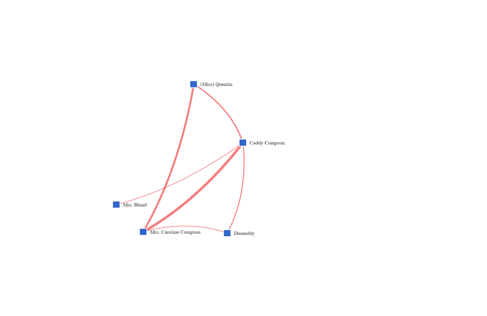
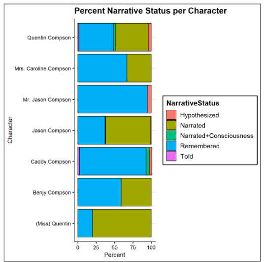

In The Sound and the Fury, Caddy is both the central character and the chapter-less character. In this series of activities (pick and choose or do them all), we will use DY to help us deepen our understanding of Caddy’s world. This is DY at its best: the tools here can help us question what we know about Caddy, how we learn it, and will raise the question: do we really know anything about her? DY can help us think about Caddy in ways we have not before.
(Tip: You can do the following exercises with any character, and any central female character, such as Minnie from Dry September or Emily from A Rose for Emily.)
Activities
Activity 1: Who Does Caddy Spend Time With?
Study: The Sound and the Fury
Instructions
Using the graph extrapolated from DY data, we can see that Caddy is never alone in the novel. This raises the question: who is she with? Who are her friends? Does she have any friends? Also: who else in th novel is never alone? (Hint: Caroline, Mr. Compson, Frony..)
Activity 2: Who Does Caddy Spend Time With? (part II)
Explore: Digital Yoknapatawpha: Character Networks
Walkthrough
From the DY Main Menu, choose
Visualizations
character-character
Force Directed Graph
Select Sound and the Fury
Sound and the Fury Bipartite (actual video will pop up eventually!)

Guided Questions
If we assume that Caddy is most likely to be friends with other white, upper-class, females, choose White for Race, Upper Class for Class, and Female for Gender.
What do you see?
(Below is the graph that should result)?
With some doing this could be the actual interactive result from the search.
(Hint: the boldest lines depict the strongest connections)
Let’s try that again, this time removing all search parameters except Female. What do you see?
And again, removing all search parameters except for:
Text: The Sound and the Fury
What do you see?
(this one is a bit overwhelming, but try to find the Caddy Compson square in the melee and click on it for a more concentrated graph)
Play around with this function for a few minutes, using search parameters of your choice.
(Hint: what we see is that Caddy’s entire social network is either familial or peripheral. Her strongest connections are to her family, and she has no real friends. What does this tell us about her life?)
Activity 3: here Does Caddy Go? In Faulkner, Who Gets to Go Where?
Explore: Digital Yoknapatawpha: Cumulative Characters
Walkthrough
From the DY banner, choose Search
Then Events
Then The Sound and the Fury
Then your chosen character
Then Present
Then Search
Then the Map It button
As a class, perform the above search and Map It function for Benjy. You will see, as you would expect, that Benjy’s movements in the story are confined and limited. This makes sense: we know that as a character Benjy is limited emotionally and confined physically.
Now, break the class into four or five groups, and have each group perform one other Search/ Map It task for the following characters: Caddy, Miss Quentin, Caroline, Dilsey, Jason. Have each group report out what their maps showed. (Hint: Jason gets to move all over the place, but the women are very confined in their movements).
Video Tutorial
Activity 4: Where Does Caddy Go After The Sound and the Fury?
Explore: Digital Yoknapatawpha: Cumulative Characters
Walkthrough
From the DY banner, choose Search
Then Characters
Then Cumulative
For Name, write Candace Compson
In the pop-up, choose Locations
Compare Caddy’s locations in The Sound and the Fury and The Appendix
How do we interpret this?
Video Tutorial
Activity 5: How Do We Learn About Caddy?
Study: The Sound and the Fury
Instructions
We know that much of The Sound and the Fury swirls around the past, but what is interesting about this graph? What does it tell us?

Final Product
Class Discussion:
What are some conclusions you can make about what it is like to live Caddy’s life?
Is Caddy’s world big or small?
How does she respond to that reality? Does her world affect the decisions that she makes?
What decisions does she make?
What are the “proper tools” that Faulkner uses to tell Caddy’s story? Do they work?
Does the relative insular world of the Compson family contribute to her brothers’ obsessions with her? How do other characters affect her decisions?
What is it like to be Caddy?
Resources
Force-Directed Character Graph
Events Maps
Cumulative Character Search
For Teachers
Pilot Classroom:
Learning Goals:
Learning Goal 1
Learning Goal 2
Learning Goal 3
Common Core:
Common Core 1
Common Core 2
Common Core 3
Student Samples:
Original Lesson Plan:
About
Note: About section that includes all extra information